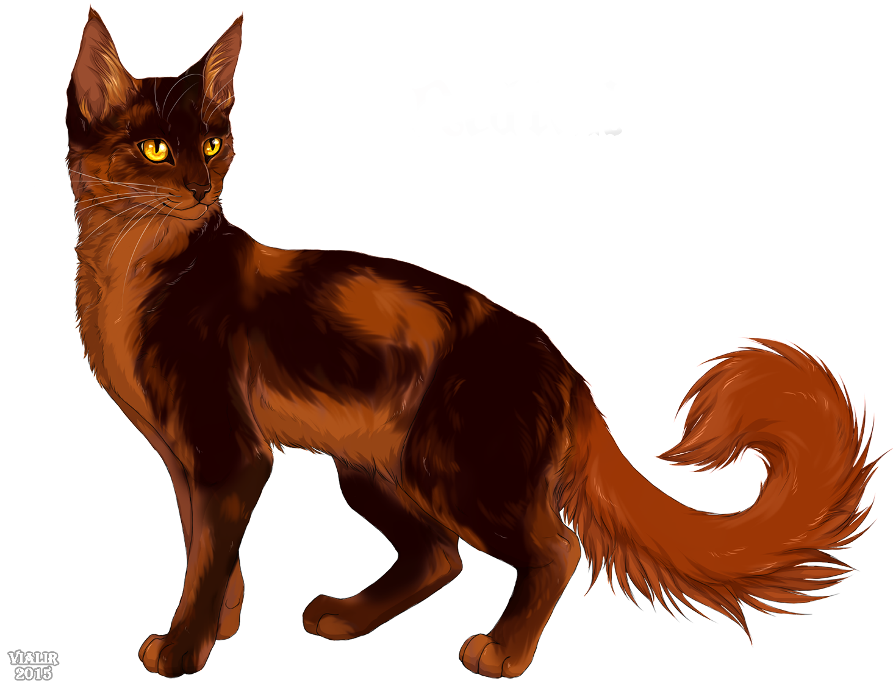

Not sure about warriors? Click here to learn more!
Before we begin, I'd like to say this is just my opinion. You don't have to take this seriously! Your OC is amazing so long as you believe in it. Also, the art is NOT MINE. All credit to the original artist. Plz no hate. And yes, I am aware it is Redtail, not exactly an original character.
Alright, let's get going!
First of all, Decide whether your oc is a tom or a she-cat. Also, decide what their rank is. Kit, apprentice, warrior, elder, med cat/app, loner, kittypet or even the leader!
Next, what fur colour? Can't think of one? Here are some suggestions.
Does your cat have patterns in their fur? For instance:
Last thing before we think about the name: What kind of cat is he/she? Are they an antagonist or protagonist? What's their personality? Remember, even the most lovely of cats need flaws... a sweetie like that would probably be a bit of a pushover.
I'll give you an example, with one of my OC's. Mooncloud, the tc med cat. She is bubbly and friendly however, she hides a lot of secrets about her past (she's not clanborn) and is very insecure. She is a black cat with a scar across her right eye.